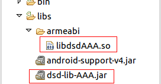

Android上集成AAA服务
集成前准备
到大数点开发者平台注册成为大数点合作伙伴并创建应用。
下载SDK
到大数点官网下载AAA SDK。
SDK内容
- dsd-lib-AAA.jar
- libdsdAAA.so
配置工程
导入库和jar包
拷贝libdsdAAA.so到libs/armeabi目录下，如果没有armeabi目录，请手动创建该目录。
拷贝dsd-lib-AAA.jar到libs目录下，如下图所示。

配置权限
如下图所示,在AndroidManifest.xml中加入如下内容使能必要的访问权限.
<uses-permission android:name="android.permission.INTERNET"/>
<uses-permission android:name="android.permission.WRITE_EXTERNAL_STORAGE"/>
<uses-permission android:name="android.permission.ACCESS_NETWORK_STATE" />
<!-- 读写联系人 -->
<uses-permission android:name="android.permission.READ_CONTACTS" />
<uses-permission android:name="android.permission.WRITE_CONTACTS" />使用SDK
初始化SDK
在开始调用后面的api之前需要使用该函数初始化sdk，只有初始化sdk成功后，调用后面的api才能成功。 该函数主要用于大数点对用户信息进行验证。
/**
* 初始化sdk
* @param aucServer auc服务器地址
* @param appId 在大数点开发者平台创建应用时获得
* @param appKey 在大数点开发者平台创建应用时获得
* @return 成功：0 失败：非0
*/
public static native int dsdAAAInit(String aucServer, String appId, String appKey);验证手机号
验证手机号由下面两步组成，第一步发送手机号到服务器去获取验证码。 第二步将收到的验证码和手机号一同提交到服务器，验证手机号码的正确性。
/**
* 发送手机号，获取验证码
* @param phoneNumber 手机号
* @return json格式字符串，eg：成功{"result":"success","veri_code":"xxxxx"}，失败{"result":"fail","reason":"reason..."}
*/
public static native String dsdAAARegisterPhoneNumber(String phoneNumber);/**
* 发送手机号和验证码，验证手机号码的正确性。
* @param phoneNumber 手机号
* @param code 收到的验证码
* @return json格式字符串，eg：成功{"result":"success"}，失败{"result":"fail","reason":"reason..."}
*/
public static native String dsdAAAVerifyPhoneNumber(String phoneNumber, String code);注册用户信息
手机号码验证通过后，就可以开始注册用户信息了。
/**
* 注册用户个人信息到服务器
* @param phoneNumber 电话号码
* @param veriCode 验证码，使用dsdAAARegisterPhoneNumber获得的验证码。
* @param name 用户昵称，可在登录后修改
* @param sex 性别，0其它，1男,2女
* @param birthday 生日,已-分隔，提交后不可修改。eg：1992-10-15，
* @param password 密码，由字母数字下划线组成，可修改。
* @param email 邮箱
* @param province 省。eg：广东
* @param city 市。eg：深圳
* @param device 设备类型，如："xiaomi5","iphone5s"
* @param signature 个性签名，可修改。eg：大数据点亮生活。
* @return json格式字符串，eg：成功{"result":"success"}，失败{"result":"fail","reason":"reason..."}
*/
public static String dsdAAARegister(String phoneNumber, String veriCode,
String name, int sex, String birthday,
String password, String email, String province, String city,
String device, String signature);登录
注册用户信息成功后，就可以使用手机号码和注册时的密码登录了。
/**
* 登录。注册成功后，就可以使用注册时得手机号和密码登录了。
* 登录成功后，在成功的json字符串里面会返回cookie。
* 开发者需要将该cookie保存起来，在下一次登录时，使用api dsdAAAAutoLogin传入保存的cookie即可快速登录，
* 不需要再重新提交电话号码和密码来登录。
* @param phoneNumber 手机号
* @param password 密码
* @return json格式字符串，eg：成功{"result":"success","cookie":"cookie content...."}，
* 失败{"result":"fail","reason":"reason..."}
*/
public static native String dsdAAALogin(String phoneNumber, String password);/**
* 使用cookie自动登录
* @param cookie 登录成功时返回的cookie。使用账号密码登录成功后，系统会返回cookie。
* 开发者将该cookie保存下来并传入该api即可实现用户快速登录。
* @return json格式字符串，eg：成功{"result":"success"}，失败{"result":"fail","reason":"reason..."}
*/
public static native String dsdAAAAutoLogin(String cookie);获取用户信息
登录成功后，调用该api获取用户注册时提交的信息。
/**
* 获取用户信息，调用该api前需要先登录。
* @param phoneNumber
* @return json格式字符串
*/
public static native String dsdAAAGetUser(String phoneNumber);返回值如下
成功：
{
"result":"success",
"info":{
"name":"张三",
"birthday":"1992-10-15",
"sex":"男",
"phone_num":"18288888888",
"email":"lw@dasudian.com",
"country":"undefined",
"province":"广东",
"city":"深圳",
"avatar":"97O0HUYQGP2VX56rA0",
"signature":"大数据点亮生活",
"last_login":"2016-04-21T06:04:32.985Z",
"device":"undefined",
"login_counter":"30",
"type":"0"
}
}
失败{"result":"fail","reason":"reason..."} 修改个人信息
登录成功后，通过该api设置自己的头像。
/**
* 上传头像，该方法是同步方法，可能会阻塞主线程。
* @param imagePath 图片路径
* @return json格式字符串，eg：成功{"result":"success","portrait":"8vcKSfPVD9U1jR5EAq"}
* 失败{"result":"fail","reason":"reason..."}
*/
public static native String dsdAAASetIcon(String imagePath);登录成功后，通过该api修改昵称
/**
* 修改昵称，需要先登录。
* @param newName 新昵称
* @return json格式字符串，eg：成功{"result":"success"}，失败{"result":"fail","reason":"reason..."}
*/
public static native String dsdAAAChangeName(String newName);登录成功后，通过该api修改个性签名
/**
* 修改个性签名，需要先登录。
* @param signature 新的个性签名
* @return json格式字符串，eg：成功{"result":"success"}，失败{"result":"fail","reason":"reason..."}
*/
public static native String dsdAAAChangeSignature(String signature);登录成功后，通过该api修改密码
/**
* 修改密码，需要先登录。
* @param oldPasswd 旧密码
* @param newPasswd 新密码
* @return json格式字符串，eg：成功{"result":"success"}，失败{"result":"fail","reason":"reason..."}
*/
public static native String dsdAAAChangePasswd(String oldPasswd, String newPasswd);忘记密码
当用户忘记密码后，需要下面两步找回密码。
- 通过手机号获取验证码
- 发送验证码和新的密码到服务器设置新密码
/**
* 获取验证码，用于忘记密码时修改密码使用。
* @param phoneNumber 电话号码
* @return json格式字符串，eg：成功{"result":"success","veri_code":"pinysl"}，
* 失败{"result":"fail","reason":"reason..."}
*/
public static native String dsdAAARequestVericode(String phoneNumber);/**
* 忘记密码，通过上一个api获取到验证码过后，可以使用该函数设置新的密码了。
* @param phoneNumber 电话号码
* @param verifyCode 发送到手机上的验证码
* @param newPasswd 新密码
* @return json格式字符串，eg：成功{"result":"success"}，失败{"result":"fail","reason":"reason..."}
*/
public static native String dsdAAAForgetPassword(String phoneNumber, String verifyCode, String newPasswd);同步联系人
通过下面两个api可以同步联系人到服务器和从服务器下载联系人
/**
* 同步联系人到服务器，需要先登录。该api的作用是上传手机联系人到服务器后，
* 调用dsdAAAGetContact可以获取到有哪些联系人也在使用该服务。
* @param contacts 联系人列表，必须是json数组格式。
* eg:["18288888888","18288888888"，"+8618288888888"...]
* @return json格式字符串，eg：成功{"result":"success"}，失败{"result":"fail","reason":"reason..."}
*/
public static native String dsdAAASyncContact(String contacts);/**
* 获取联系人列表，需要先登录。同步联系人过后，就可以调用该方法获取在联系人当中有哪些联系人也注册了该app。
* @param phoneNumber 登录时的电话号码
* @return json格式字符串，{"result":"success","phone_number":"13618074451","contacts",
* ["13761975289","+8618565618719","18565618719"]}}
*/
public static native String dsdAAAGetContact(String phoneNumber);第三方登录
qq登录
/**
* 上传qq用户的信息到服务器
* @param openId qq登录授权后返回的openid
* @param accessToken qq登录授权后返回的access_token
* @param appId qq开发者网站申请的appid
* @param device 用户使用的设备类型，eg："xiaomi4"
* @return json格式字符串，eg：{"result":"success","user_id":"9F058B842A48B5EE2419CCB2E53DB2FF"}
*/
public static native String dsdAAAqq(String openId, String accessToken, String appId, String device);微信登录
/**
* 上传微信用户的信息到服务器
* @param openId 微信登录授权后返回的openid
* @param accessToken 微信登录授权后返回的access_token
* @param appId 微信开发者网站申请的appid
* @param device 用户使用的设备类型，eg："xiaomi4"
* @return json格式字符串，eg：{"result":"success","user_id":"9F058B842A48B5EE2419CCB2E53DB2FF"}
*/
public static native String dsdAAAwechat(String openId, String accessToken, String appId, String device);/**
* 从服务器拉取用户信息
* @param openId qq或则微信授权后返回的openid
* @return json格式字符串
*/
public static native String dsdAAAOauthUserInfo(String openId);
返回值eg：
{
"name":"Yy",
"birthday":"undefined",
"sex":"男",
"phone_num":"undefined",
"email":"undefined",
"country":"undefined",
"province":"广东",
"city":"深圳",
"avatar":"http://q.qlogo.cn/qqapp/222222/9F058B842A48B5EE2419CCB2E53DB2FF/100",
"status":"active",
"signature":"undefined",
"joined":"2016-04-21T10:48:21.735Z",
"last_login":"2016-04-21T10:48:21.735Z",
"device":"android",
"login_counter":"0",
"type":"1"
}
下载Android示例程序